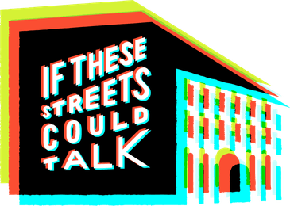
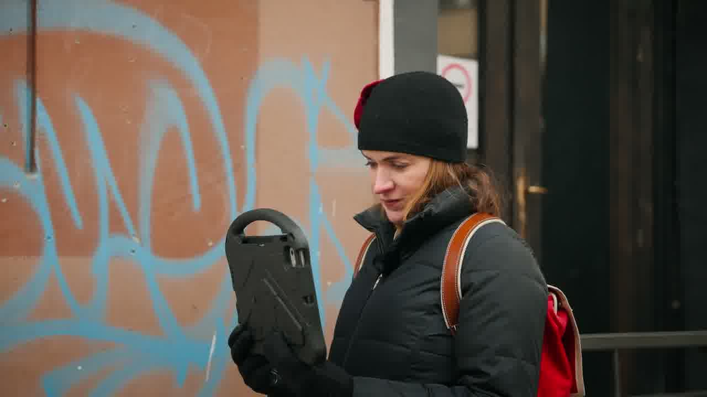
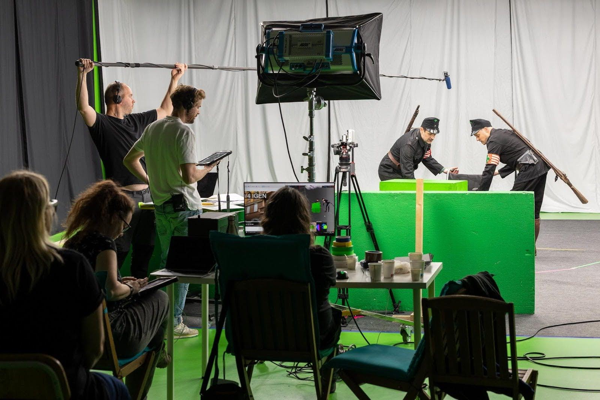
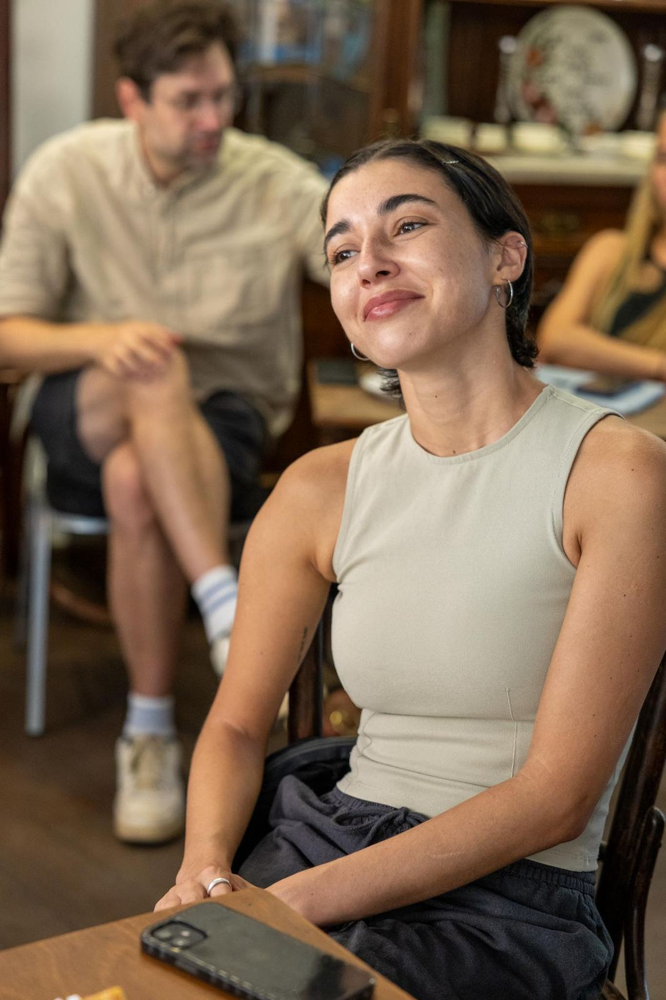
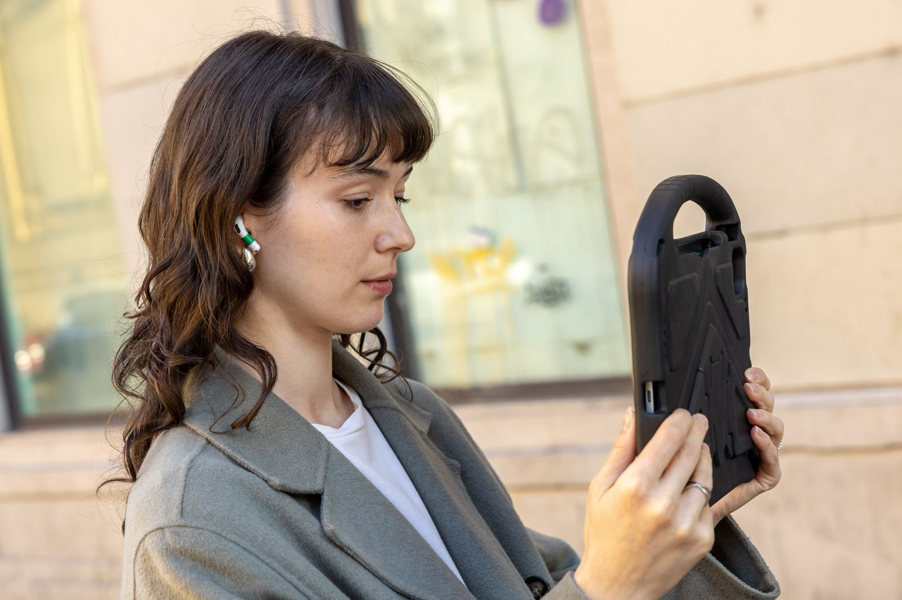
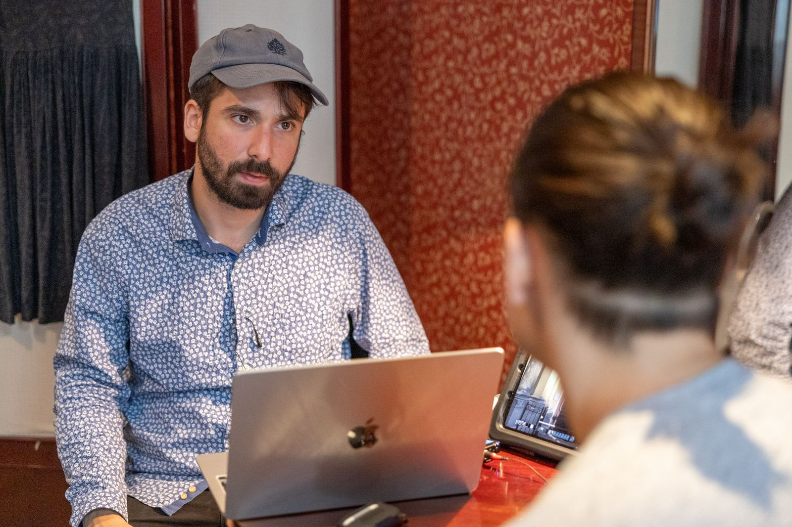

If These Streets Could Talk
Ha ezek az utcák mesélhetnének: kiterjesztett valóságon alapuló várostörténeti élmény Budapest egykori zsidónegyedében. A résztvevők egy iPaddel járják az utcákat, és azokon a helyeken találkoznak az egykor itt élt emberekkel, ahol a történeteik megtörténtek.


Megnézem a YouTube-on · 2 percCaroline Savage, az Egyesült Államok budapesti nagykövetségének ideiglenes ügyvivője, a holokauszt nemzetközi emléknapján kipróbálja a prototípust. Videó: az Egyesült Államok budapesti nagykövetsége
Röviden
- Három prototípus: Vanczák Béla küldetése, Mézeskalács és Két kenyér.
- Több mint 200 emberrel teszteltük az utcán.
- Kutatás 60 résztvevővel, a Sussexi Egyetem etikai bizottságának jóváhagyásával.
- Prototípus-forgatás az Origo Filmstúdióban.
- A teljes élmény bemutatója 2027-re várható.
„Azt hittem, jól ismerem ezeket az utcákat, de most rájöttem, mennyi mindent nem tudok.”
Tesztelő, aki legalább tíz éve él a környéken



